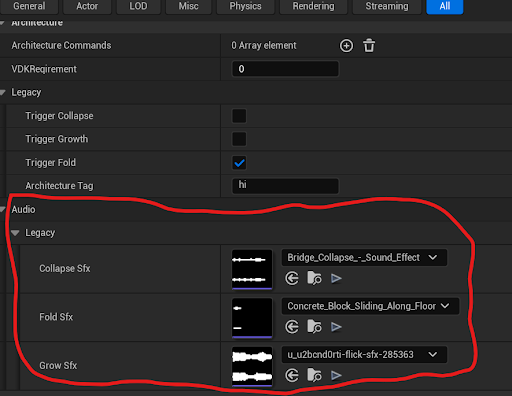

This month focused on strengthening the Architecture Transformation Manager through audio support and integration updates, then resolving packaging-specific collision issues to keep behavior consistent between editor and build environments.
April Snapshot
Added sound effect parameter support across all integrated transformation systems.
Integrated the default Grow Transformation variant into the manager workflow.
Investigated and fixed collision discrepancies that appeared only in packaged builds.
Provided standby support while no new feature assignments were active in week 3.
Week 1
Audio + Grow Integration
This week I extended the Architecture Transformation Manager by adding sound-effect support across all integrated systems. I implemented parameters that let designers assign and control audio per transformation system, improving feedback and strengthening player-facing responsiveness.
I also integrated the default Grow Transformation variant into the manager, ensuring it works smoothly alongside the other systems in the unified framework.
SFX Parameters in Architecture Transformation Manager

Manager Audio Integration Preview
Week 2
Packaged Build Collision Fix
This week I was assigned to fix a collision bug that appeared after packaging the game in Unreal Engine. Collisions behaved correctly in the editor, but certain collisions failed in packaged builds.
I investigated the root cause and applied targeted fixes so collision behavior remains consistent and reliable in both editor and packaged environments.
Week 3
Standby Support
This week I was not assigned specific implementation tasks because there were no new feature requests at this stage. My game director noted that she would reach out if any support or development work was needed.